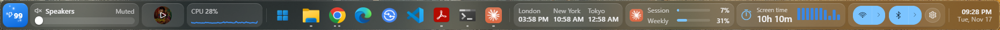
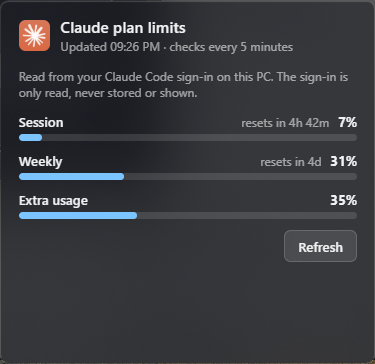
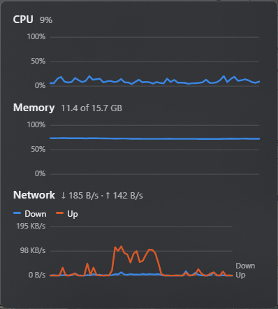
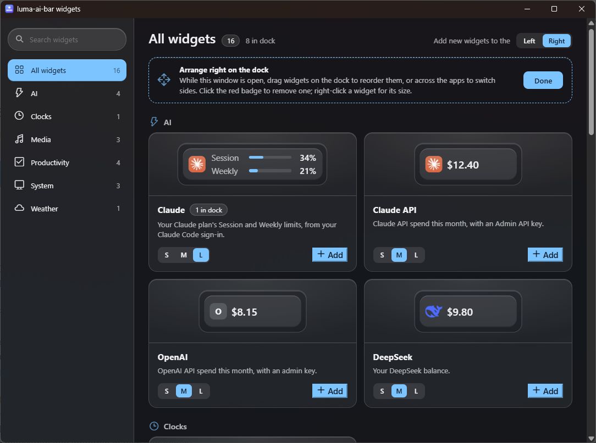

Your taskbar,
with room to breathe.
luma-ai-bar is a dock that takes the place of the Windows taskbar. Your apps sit in the middle, and widgets for your PC, music, clocks and AI usage sit beside them.
MSI installer, 3.6 MB. Updates install from inside the app.

Everything the taskbar does, and more
It keeps the parts you use every day and gives the rest of the bar to things worth a glance.
Apps and windows
Pinned and running apps, a dot per open window, live previews on hover, and a nudge when an app wants your attention.
Widgets on both sides
Put widgets left or right of your apps in three sizes. Rest the pointer on one to see its details.
AI usage at a glance
Your Claude plan's Session and Weekly limits, plus API spend for Claude, OpenAI and DeepSeek.
Liquid glass
Choose Liquid glass, Glass or Solid. Light and dark themes follow Windows, or pick one yourself.
Your taskbar always comes back
Quitting, a crash, or even killing the process puts the Windows taskbar back. Ctrl+Alt+Shift+Q quits from anywhere.
Stays on your PC
API keys are encrypted with Windows' own protection. Screen time is counted locally. No accounts, no tracking.


Details when you want them
Every widget opens a details view. Hover for a quick look, or click to keep it open.
- Claude: Session, Weekly and extra usage, with when each one resets.
- System: live CPU, memory and network graphs.
- Screen time: today's total from Windows' own record, split by app.
- Wallpaper: next background for Windows Spotlight in one click.
Widgets
109 of them. Pick them from the widget picker, then drag them around on the dock itself.

Up and running in a minute
No account, no setup wizard.
Download
Get the installer from the latest GitHub release.
Install
Run the MSI. Windows may warn that the publisher is unknown; choose More info → Run anyway.
Make it yours
Open Settings from the tray icon to pick a size, style and position, then add widgets.
Give your taskbar a glow-up
Free, with the source on GitHub, and made for Windows 11.